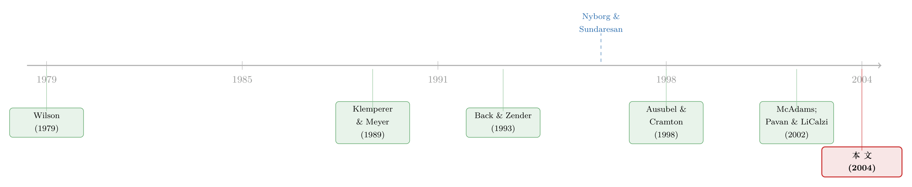

把价格切成小格子，垄断就消失了——重读统一价格拍卖里的「打折之谜」
本文读的是 Kremer & Nyborg (2004, Review of Financial Studies)：在统一价格拍卖里，经典理论（Wilson 1979；Back & Zender 1993）预言「打折」可以大到离谱——卖方可能被压到几乎一分钱拿不到。但作者指出，只要把现实里本就存在的两件小事——价格的「最小报价单位」(tick size) 和数量的「最小申报单位」(quantity multiple)——放回模型，均衡里的打折就能被压到任意小；更极端地，只要每个竞买人只能提交「有限个」报价，停盘价 (stop-out price) 几乎必然等于物品真实价值 v，打折彻底消失。一个看似微不足道的「离散化」，把竞买人从「古诺」式的勾结，硬生生推回了「伯川德」式的厮杀。
1 一个让财政部坐立不安的预言
先说一件听起来很反直觉的事。
美国财政部从 1998 年 11 月起，把所有国债拍卖都改成了统一价格拍卖 (uniform price auction)：大家同时提交「价格—数量」的需求，按出价从高到低分配，直到供给用完，而所有中标者付的是同一个「市场出清价」，也就是停盘价 (stop-out price)。这套机制看上去清清爽爽，几乎就是教科书里的瓦尔拉斯市场——唯一的区别是，需求曲线是竞买人策略性地报出来的。
可问题恰恰出在这「策略性」三个字上。
理论家很早就警告过：这种拍卖在理论上能产生任意大的打折 (arbitrarily large underpricing)。也就是说，停盘价可以被竞买人合谋般地一路压低，远低于物品的真实价值，卖方（财政部）几乎血本无归。这不是某个边角料结论，而是 Wilson (1979) 与 Back and Zender (1993) 这条主线的核心命题。它的根源是一种内生的市场势力：在均衡里，每个竞买人都成了「残余供给」(residual supply) 上的买方独占者 (monopsonist)——也就是别人需求填满之后剩下的那一块，归他一个人说了算。
于是一个尖锐的张力就摆在面前：既然理论说统一价格拍卖会被「打折」吃干抹净，为什么现实里全世界的财政部、电力市场、IMF 黄金拍卖，反而越来越爱用它？更扎心的是，实证一遍遍地发现，那个「严重打折」根本没出现。Nyborg and Sundaresan (1996) 用「发行前」(when-issued) 交易做基准，量出来的打折只有收益率上不到一个基点的零头；Goldreich (2003) 用更大、更新的样本，得到同样的结论；财政部自己的内部研究也是如此，否则它不会干脆把发行方式全盘切过去。
理论与现实，对不上。这篇论文要做的，就是去补上这条裂缝。
2 先看清「打折」到底是怎么长出来的
要理解作者怎么拆掉这个结论，得先理解这个结论为什么成立。这一步绕不过去，但其实很优雅。
设有 N 个风险中性的竞买人，物品对每个人的单位价值都是 v（共同价值，公开信息），供给量为 Q。竞买人 n 提交一条不增的需求函数 x_n(p)，他的收益是
$$\pi_n = (v - p_0)\, q_n$$
其中 p_0 是停盘价、q_n 是他拿到的数量。停盘价由总需求 X(p)=\sum_n x_n(p) 出清的位置决定：
$$p_0(Q, x) = \sup\{\, p \mid X(p) \ge Q \,\}.$$
现在用 Wilson (1979) 的一个关键洞察：在对称均衡里，与其去挑一整条需求曲线，不如把问题降维成「挑一个最优的停盘价」。因为别人都报同一条 x(p)，竞买人 1 的最优反应只要让总需求恰好在 p_0 处等于供给即可——他的剩余空间，就是别人吃饱之后的残余供给 Q-(N-1)x(p_0)。于是问题坍缩成：
看懂这个式子，整篇论文就懂了一半。竞买人面对的是一道最纯粹的买方独占题：把停盘价 p_0 往下压，每单位赚得更多（第一项变大），但自己能拿到的份额变小（第二项变小，因为价压低了，别人 x(p_0) 就吃得多）。两股力量一拉扯，最优解落在 p_0 < v——打折就这么内生出来了。
对它求一阶条件，得到
$$(N-1)(v - p_0)\,x'(p_0) + Q - (N-1)x(p_0) = 0.$$
再叠加对称条件 N x(p_0) = Q，就能解出一大票打折均衡。作者复刻了其中两类最有名的：一类是 Wilson 式的线性均衡，停盘价是 g·v（g 可以是 0 到 1 之间的任意数）；另一类是 Back and Zender (1993) 的非线性均衡
$$x(p) = a\,(1 - p/v)^{(1/N - 1)},$$
它的停盘价同样可以取到 0 到 v 之间的任何值。换句话说，打折的程度几乎是不确定的，从零到几乎全部，都能撑成均衡。这就是那个让人不安的预言。
这里藏着一个直觉钥匙：在这些打折均衡里，需求曲线是连续的，供给几乎被「价上方」的需求吃干净了——留给停盘价上那一点边际需求去抢的量，测度为零。既然抢不到什么东西，谁还愿意为了那一丁点量去把价格抬上去？于是大家心照不宣地「维持现状」，共同享有市场势力。作者把它精准地比作古诺竞争 (Cournot competition)：靠限制产量来维持正利润。
3 真正关键的一步：把连续的世界切成格子
到这里，故事的张力已经拉满。接着，一个自然的问题是：现实里的竞买人，真的能提交那种「连续、光滑」的需求函数吗？
显然不能。现实里你提交的是一串离散的「价格—数量」对（bid），不是一条函数；报价数目是有限的；价格必须是 tick size h 的整数倍；数量必须是 quantity multiple w 的整数倍。英国国债拍卖里，价格按每 100 英镑面值 1 便士跳动，单笔数量必须是 100 万英镑面值的整数倍；意大利国债更狠，每人最多只能报三笔。
这些约束在连续模型里被当作无关紧要的技术细节抹掉了。但真正关键的一步在于——它们一点都不无关紧要。
把需求曲线切成台阶后，会发生一件要命的事：残余供给重新有了正的质量。具体说，当所有「价上方」的整段需求填完后，剩下来要在停盘价上分配的那一块 R^+(p_0)，不再是测度零，而是有正的体量。于是竞买人忽然发现：只要把价格抬高一丁点（一个 tick），就能把这一大块残余供给抢到手。
这下「以小博大」的杠杆出现了——作者的原话是「bigger bang for the buck」。一旦抢量的代价（涨一个 tick）远小于抢到的量，竞买人就有了强烈的动机去抬价竞争。而这恰恰是伯川德竞争 (Bertrand competition) 的逻辑：只要稍微变一下价就能吃掉对手的大片份额，价格就会被一路推到竞争性水平。
于是反转出现了。作者的核心结果是：
Theorem 1（有限报价数）：若每个竞买人只能提交有限个报价，记 Q_max 为供给分布支撑的上确界，只要 Q > Q_max/(N-1)，则均衡停盘价几乎必然等于 v——打折彻底消失。
证明的直觉是一个漂亮的「棘轮」(ratchet) 论证：给定任何会产生打折的报价组合，总存在一个最低的、以正概率出现的停盘价。竞买人会在这个最低停盘价上为边际量开打，把它顶上去，到次低的停盘价；然后再顶，再顶……一路把最低停盘价推到 v 为止。连续模型里这个论证之所以失效，正是因为那里边际量测度为零，没人愿意为「零」去竞争。
而当 tick size 和 quantity multiple 同时存在时（这才是现实），打折未必能被压到零，但作者给出了清楚的比较静态：最大均衡打折随竞买人数目 N 增加而下降、随 quantity multiple w 增加而下降、随拍卖规模 Q 增加而上升。直觉同样统一：这些参数变化都让「边际那一块」相对于一个竞买人的份额变得更大，于是抬价抢残余供给更划算，打折就被挤掉。
注意一个微妙之处：作者还证明，如果只加 tick size、或只加 quantity multiple 中的一个约束，唯一的结果就是竞争性结局 p_0 = v。打折之所以能在均衡里残存，恰恰需要两个离散约束同时在场、互相牵制。这正是为什么作者把分析重心放在「两者皆有」这一最贴近现实的情形上。
至此，那个困扰我们的「理论—现实」裂缝就有了答案：现实里的拍卖本就是离散的，而离散化天然地削弱了打折。理论家此前的悲观预言，某种意义上是被「连续需求函数」这个过于慷慨的假设惯出来的。
4 第二记杀招：换一种分配规则
如果说离散化是「现实本就替我们做了的事」，那么作者的第二个贡献，则是一条主动的机制设计建议。
回到那个买方独占的直觉。标准分配规则有一个隐蔽的偏心：它把「价上方」的需求 (inframarginal demand) 全额满足，只对停盘价上的边际需求按比例配给。作者用 Alice 和 Bob 两个竞买人讲透了它的危害——
假设 Alice 报了一个高于物品价值 v 的价。这个高价未必抬高她自己付的钱（她付的是停盘价），但它锁定了她的份额：因为 Bob 若把停盘价顶到 v 以上就要亏钱，所以他不敢，于是 Alice 那个虚高的报价在标准规则下被全额兑现。结果 Bob 能拿到的量被死死压住，他面对的「价格—份额」权衡非常平——抬价也换不来多少量，干脆不抬。全额优先满足高价需求，反而抑制了竞争。
那怎么办？作者的修正是：对「价上方」的需求只给部分优先权 (partial preference)，而不是全额。这样 Bob 面对的权衡就陡了——他抬价能抢回更多，于是他愿意抬。竞争被重新点燃，而这一切都还保留了统一价格拍卖的灵魂（中标者付停盘价）。更重要的是，这个设计明确考虑了竞买人可能容量受限 (capacity constrained)、吃不下全部供给的现实，结论对此稳健。
（关于「分配规则如何左右拍卖里的合谋与竞争」，这条线作者在配套的 RAND 文章里讲得更系统，可参见我对一篇相关研究的评述《拍卖桌上的「合谋」，到底藏在哪一种规则里？》。）
5 一个收尾的细节：供给不确定下的「稳健均衡」
论文还有一块给实证研究者的「彩蛋」，值得一提。
Back and Zender (1993) 那条非线性均衡曲线 x(p)=a(1-p/v)^{1/N-1}，有个迷人的性质：只要 a ≥ Q_max/N，它与供给量 Q 无关，因此无论供给怎么随机波动，它都能构成均衡——这类叫供给不确定稳健均衡 (supply uncertainty robust equilibria)。作者在此做了两件事：
其一，他们不靠任何外生的正则性条件（不预设可微、不预设市场出清价存在唯一）就证明了这类对称稳健均衡的存在性与唯一性。曲线的可微性是被「推导出来」的，而非「假设进去」的。这对用个体竞买数据去检验市场势力的实证工作很有用——它给出了一个在供给不确定时值得聚焦的天然均衡集（正是 Keloharju, Nyborg, and Rydqvist 2003 那条经验路线所需要的）。
其二——也是和前文呼应的关键——他们证明：在离散版的 Wilson/Back-Zender 模型里，根本不存在供给不确定稳健的打折均衡。离散化又一次把打折结论削弱了。一以贯之。
6 文献脉络
把这条线捋直，会看到一个很「金融经济学」的演进节奏：先有一个漂亮但极端的理论预言，再有实证反复打脸，最后理论回过头去修正自己的假设。
最上游是 Wilson (1979)，他第一个把「股份拍卖」写成竞买人提交需求曲线的博弈，并发现了打折。Klemperer and Meyer (1989) 在寡头供给函数均衡的框架下，给了这类「需求/供给函数均衡」唯一性的正则性条件——这套工具后来被反复借用。Back and Zender (1993) 把它打磨成国债拍卖的标准模型，明确刻画了那条与供给无关的非线性打折均衡，并据此讨论财政部该不该做那场「统一 vs 歧视价格」的实验。

与此同时，市场势力这条暗线在别处生根：Kyle (1989) 与 Wang and Zender (2002) 让竞买人风险厌恶，Ausubel and Cramton (1998) 让竞买人容量受限——它们都印证了买方独占势力的普遍性。实证一侧，Nyborg and Sundaresan (1996) 用发行前交易做基准，量出打折小到「不到一个基点」，这与理论的「严重打折」形成刺眼反差。
到了 2000 年代初，一批人开始从机制设计角度「治理」打折：Back and Zender (2001)、McAdams (2002)、Pavan and LiCalzi (2002) 各自指出弹性供给（让卖方供给随价格调整）能压低打折。本文 Kremer and Nyborg (2004) 站的位置不同——它不动供给，而是把矛头指向两处被忽视的现实：需求侧的离散化与分配规则的偏心。它和作者同年那篇讨论分配规则的 RAND 文章互为姊妹篇，区别在于本文把「容量受限」这个现实变量也一并纳入了设计考量。
7 评论与延伸（Q&A + 研究方向）
Q：把价格「切成格子」反而能消除垄断，这是不是有点太巧了？现实里 tick 明明很小。
不矛盾，反而正是要点。tick 小意味着「抬一格价」的代价小，于是抢残余供给极其划算，伯川德式竞争更猛、打折更小。论文恰恰证明最大打折是递减于（更细的）竞争条件的。真正制造打折残余空间的，是 tick 与 quantity multiple 的联合牵制；任一单独存在都把结果逼回
p_0=v。
Q：这是不是说 Back-Zender「打折严重」的结论错了？
不是「错」，而是「脆」。他们的均衡严格依赖连续、光滑、可任意提交的需求函数——在那个世界里边际量测度为零，没人为零而战，所以打折能稳住。把这个慷慨假设换成现实的离散报价，均衡就塌了。这是一个关于模型假设有多大分量的经典案例，而非谁对谁错。
Q：古诺 vs 伯川德的类比，是修辞还是真有其实？
是实打实的机制对应。打折均衡里竞买人靠限制有效需求量维持正利润（古诺：限产保价）；离散化后，稍微抬价就能吞掉一大块残余供给（伯川德：微调价格抢占全部市场），利润被竞争抹平。论文脚注里也是这么明说的。
Q：「改分配规则」听起来很美，财政部会买账吗？
这是最大的现实疑问。部分优先权意味着：报了高价的人不再被保证全额成交。这在政治上、操作上都可能引发「我出了高价凭什么被配给」的反弹，也可能改变竞买人是否参与的决策——而后者是模型里没有内生的。所以它更像一个「原理证明」(proof of concept)：微设计能极大改变结果，但落地需要把参与约束补进来。
Q：结论对「供给不确定」稳健吗？这在国债拍卖里很常见（非竞争性投标会侵蚀可分配量）。
稳健，而且这正是论文的一块硬骨头。即便供给随机，只要每人报价数有限，棘轮论证依然把停盘价顶到
v；而且离散版里压根不存在供给不确定稳健的打折均衡。换句话说，离散化的「治打折」效果不靠供给确定这个假设。
Q：那为什么实证里偶尔还是看到打折（哪怕极小）？
论文给了一个诚实的出口：即便标准规则下均衡打折能被压到任意小，打折仍可能是一个 ε-均衡 (epsilon-equilibrium, Radner 1980)——「差一点点就成立的均衡」。竞买人没有强动机去消除那最后一丝打折。这也正是作者主张改分配规则的第三条理由：给激进出价者更大奖励，把这最后一丝也挤掉。
几个可能的研究问题与提案
(1) 把「离散化治打折」搬到公司债一级市场。 【经济故事】公司债发行越来越多采用类拍卖/簿记建档的混合机制，而新债上市常被记录到显著的「一级—二级」价差（如新债首笔成交平均白赚数十个基点）。本文预测：tick size 与最小申购单位会系统性影响这种发行折价。【可行性】中。需要发行层面的报价微观数据（多数市场不公开订单簿），识别上可利用不同市场/时期 tick 规则的变化做差分。数据是主要瓶颈，但 TRACE + 部分主权债拍卖数据可拼出近似。可与《新债上市第一笔成交，凭什么白赚 47 个基点？》对照。
(2) 容量受限竞买人 × 一级交易商的资产负债表。
【经济故事】本文把「容量受限」作为分配规则设计的关键变量；现实中一级交易商的承接能力正是被资产负债表约束的容量。把交易商的资本/杠杆约束当作 q_n 的上限变量，可检验「容量越紧、打折越大」这一可检验含义。【可行性】中高。已有研究用交易商持仓与投标行为数据（如英格兰银行、各国财政部拍卖），把容量约束做成连续度量并不难。识别可用监管资本冲击作为外生变动。
(3) tick size 改革作为自然实验。 【经济故事】多个市场曾改过国债拍卖的最小报价单位。本文给出明确比较静态（打折随 tick、quantity multiple 变化的方向），可直接拿改革做事件研究 / DiD。【可行性】高（若能拿到改革前后的拍卖结果）。结果变量是停盘价相对 when-issued 基准的折价，识别清晰。难点是改革往往与其他制度变化捆绑，需要小心同期混杂。
(4) 外资竞买人会不会改变市场势力结构？
【经济故事】买方独占势力依赖竞买人数目 N 与份额分布。外资进入会改变 N 与集中度，从而（按本文逻辑）改变均衡打折。【可行性】中。需要按竞买人国籍标注的个体投标数据（芬兰、瑞典等少数国家有），可与本博客关于外资持有人的讨论线索呼应。诚实地说，这类带身份标注的拍卖微观数据极稀缺，是最大约束。
8 我的判断
这篇文章最漂亮的地方，是它用一个几乎免费的假设改动，撬动了一个看似坚固的理论大厦。Wilson/Back-Zender 的打折结论之所以惊悚，本质上是被「连续可微的需求函数」这个数学便利性宠出来的；一旦把现实里本就存在的离散性放回去，那个测度为零的边际块立刻有了体量，竞争从古诺切回伯川德，打折应声而落。它既解释了「为什么现实里打折没那么严重」，又给出了「怎样主动把它压得更小」的设计建议——前者是实证解释力，后者是规范含义，两手都硬。证明上不预设正则性条件去拿下存在唯一性，也是真功夫。
对识别（这里更该说「对结论的稳健性」）我有两点保留。其一，参与是外生的。改分配规则、削弱对高价的保护，很可能改变竞买人是否进场、报多少笔的决策，而这些都被模型当作给定。一旦把参与内生进来，「部分优先权」会不会因吓退竞买人而反噬，并不清楚——这恰恰是机制设计最容易翻车的地方。其二，共同价值、风险中性的设定干净，但把私有信息、风险厌恶、赢者诅咒一并抽走了；现实国债拍卖里这些都不是小事，离散化的「治打折」效果在它们面前是否同样强劲，论文没有正面回答（虽然它指出方法可延拓到风险厌恶）。
后续我最想看到的，是把这套「离散化 + 分配规则」的可检验含义，拿一场真实的 tick size 或申购单位改革去做干净的因果检验——理论给的比较静态方向足够明确，缺的只是一个好实验和一份订单簿。
参考文献
- Ausubel, L. M., and P. C. Cramton (1998). Demand Reduction and Inefficiency in Multi-Unit Auctions. Working paper, University of Maryland.
- Back, K., and J. F. Zender (1993). Auctions of Divisible Goods: On the Rationale for the Treasury Experiment. Review of Financial Studies 6(4), 733–764.
- Back, K., and J. F. Zender (2001). Auctions of Divisible Goods with Endogenous Supply. Economics Letters 73(1), 29–34.
- Goldreich, D. (2003). Underpricing in Discriminatory and Uniform-Price Treasury Auctions. Working paper, London Business School.
- Keloharju, M., K. G. Nyborg, and K. Rydqvist (2003). Strategic Behavior and Underpricing in Uniform Price Auctions: Evidence from Finnish Treasury Auctions. Working paper, CEPR and London Business School.
- Klemperer, P. (1999). Auction Theory: A Guide to the Literature. Journal of Economic Surveys 13(3), 227–286.
- Klemperer, P. D., and M. A. Meyer (1989). Supply Function Equilibria in Oligopoly Under Uncertainty. Econometrica 57(6), 1243–1277.
- Kremer, I., and K. G. Nyborg (2004). Divisible Good Auctions: The Role of Allocation Rules. RAND Journal of Economics 35(1), 147–159.
- Kyle, A. S. (1989). Informed Speculation with Imperfect Competition. Review of Economic Studies 56(3), 317–356.
- McAdams, D. (2002). Modifying the Uniform-Price Auction to Eliminate 'Collusive-Seeming Equilibria'. Working paper, MIT.
- Nyborg, K. G., and S. Sundaresan (1996). Discriminatory versus Uniform Treasury Auctions: Evidence from When-Issued Transactions. Journal of Financial Economics 42(1), 63–104.
- Pavan, A., and M. LiCalzi (2002). Tilting the Supply Schedule Enhances Competition in Uniform-Price Auctions. Working paper, Northwestern University.
- Radner, R. (1980). Collusive Behavior in Noncooperative Epsilon-Equilibria of Oligopolies with Long but Finite Lives. Journal of Economic Theory 22(2), 136–154.
- Wang, J. J. D., and J. F. Zender (2002). Auctioning Divisible Goods. Economic Theory 19(4), 673–705.
- Wilson, R. (1979). Auctions of Shares. Quarterly Journal of Economics 93(4), 675–689.